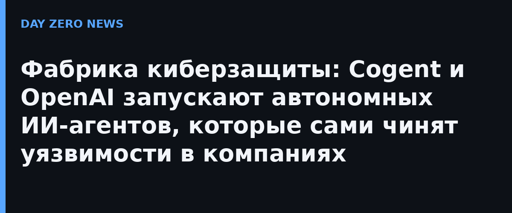

Компании годами живут по одному сценарию: сканер вываливает тысячи уязвимостей, аналитики руками расставляют приоритеты, а патчи доходят до продакшена через недели. Cogent — стартап из Северной Америки, ранее известный своим же расследованием масштабов уязвимости в PHP-инфраструктуре крупнейших компаний мира, — вместе с OpenAI выводит на этот рынок «киберзащитные фабрики». ИИ-агенты на моделях OpenAI (в описании фигурируют GPT-6.1 Sol, GPT-5.6 и GPT-6 Astra для сложных задач планирования) непрерывно сканируют корпоративную среду, проверяют, реально ли уязвимость эксплуатируема, и выполняют разрешённые изменения — от помощи аналитику до полностью автономного ремонта.
Основа системы — «движок контекста»: граф знаний предприятия, где связаны активы, уязвимости, личности владельцев, зависимости и бизнес-критичность. Именно этот контекст позволяет агентам не тушить пожары вслепую: например, в упомянутом Cogent исследовании октябрьской уязвимости в PHP средняя компания из американской «пятисотки» имела 2266 затронутых активов — а агенты свели список первоочередных к 16. За безопасность самого «ремонтника» отвечают правила Agent Policies, движок TRACE, проверяющий каждое действие агента до исполнения, и независимый Agent Gateway; высокорисковые операции выполняются в изолианных песочницах.
По данным Cogent, mean time to remediate упал на 75%, количество разобранных уязвимостей выросло в пять раз, окно экспозиции критических дыр сократилось на 97%, а полная оценка среды занимает три часа после подключения. Запуску фабрик предшествовала покупка Specular — поддержанного Google ИИ-платформы, которая «видит» периметр компании глазами атакующего, и первое место модели Cogent VR-1.1 на бенчмарке LiveCVEBench по ремонту реальных уязвимостей.
Гонка вооружений в ИИ-безопасности давно сместилась в скорость: атакующие с агентами ищут путь в инфраструктуру за минуты, защитники — за дни. «Способность моделей OpenAI вести длительные задачи открывает новый уровень автономии: агенты теперь доводят работу от расследования до проверенного ремонта», — формулирует сооснователь и технический директор Cogent Генг Снг. Идея в том, чтобы каждая компания могла запустить собственную «фабрику», где жизненный цикл уязвимости — от раскрытия до подтверждённой починки — проходит без человека на ключевых участках. Границы автономии при этом задаёт сама компания: что агенту разрешено, что требует согласования, а что он делает совсем без спроса.